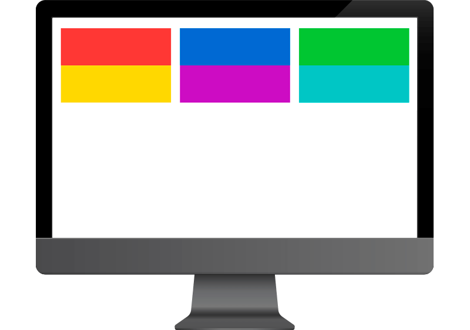
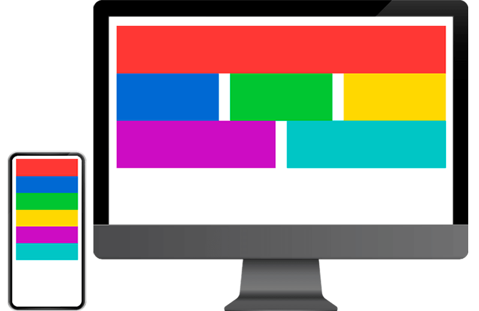
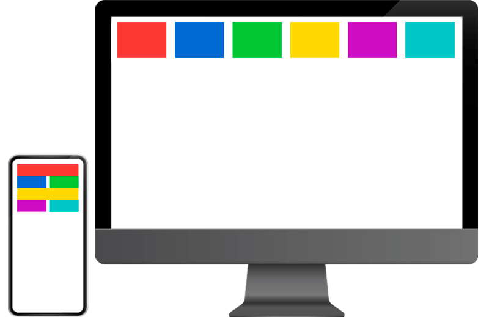
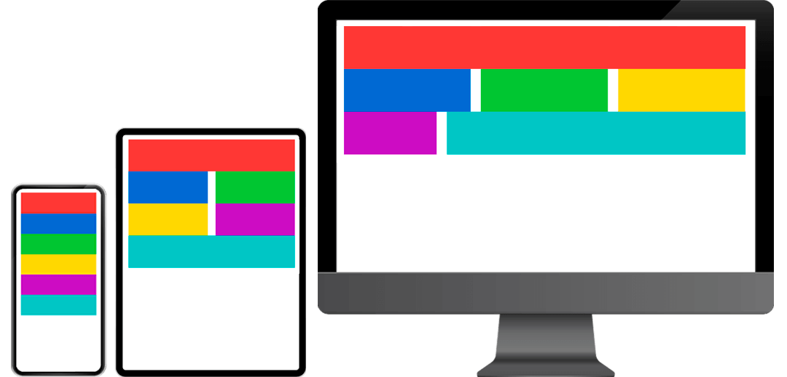
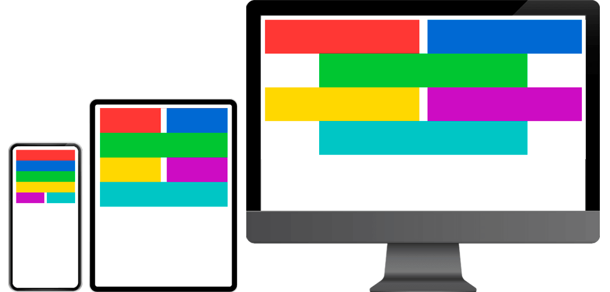
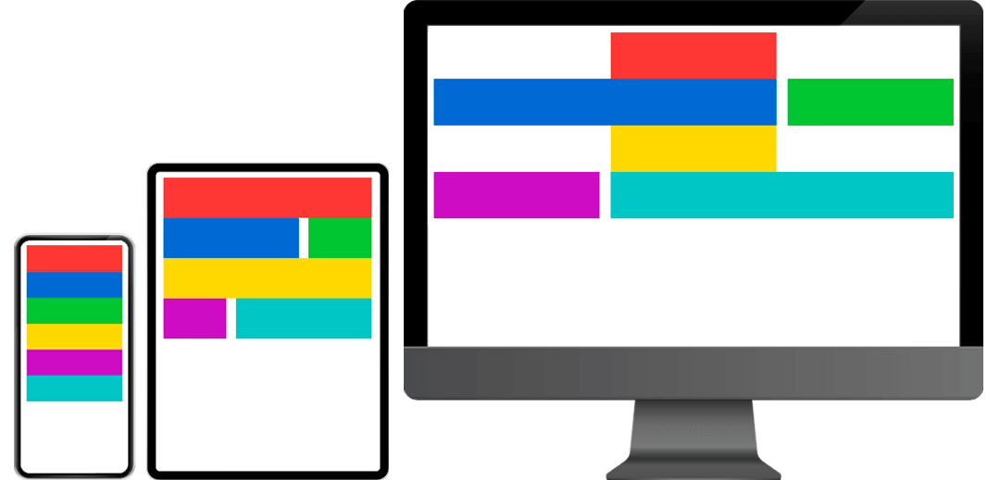
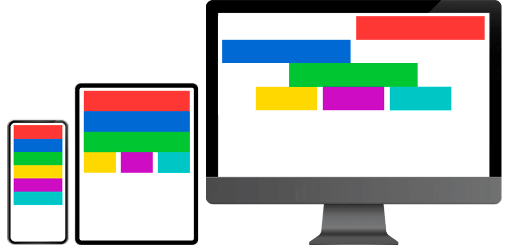
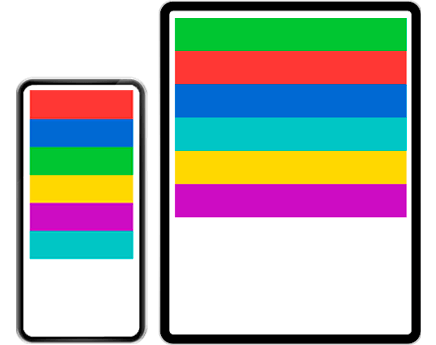
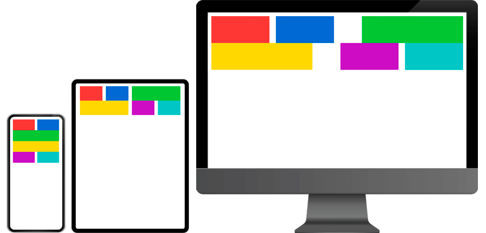

Pour cet exercice, vous devrez recréer plusieurs mise en page existante à l’aide de la grille Bootstrap
Matériel
Pen de départ
Vous n’avez qu’à modifier le HTML (nul besoin de modifier le CSS ou le JavaScript).
Bootstrap 5 est déjà inclus dans le Pen.
Requis globaux
- Pour chaque étape, faites un fork du Pen d'origine afin de repartir du début à chaque fois.
- Nommer chacune de ces copies en fonction du nom de l'étape actuelle. Par exemple, pour l'étape 1, nommer votre pen: Bootstrap - Étape 1
- Ajouter dans le HTML les classes Bootstrap nécessaires afin de reproduire la mise en page demandée.
Étapes
Étape 1: Faites en sorte, peu importe la résolution d'écran, de recréer la grille suivante. 
Étape 2: Recréez l'affichage suivant en respectant le changement de mise en page apparaissant au breakpoint xl 
Étape 3: Recréez l'affichage suivant en respectant le changement de mise en page apparaissant au breakpoint xl 
Étape 4: Recréez l'affichage suivant en respectant les changements de mise en page apparaissant aux breakpoints md et xl 
Étape 5: Recréez l'affichage suivant en respectant les changements de mise en page apparaissant aux breakpoints md et xl. À partir de cette étape, vous aurez besoin des options d'alignement des rangées afin de réussir certains exercices. 
Étape 6: Recréez l'affichage suivant en respectant les changements de mise en page apparaissant aux breakpoints md et xl 
Étape 7: Recréez l'affichage suivant en respectant les changements de mise en page apparaissant aux breakpoints md et xl 
Étape 8: Recréez l'affichage suivant en respectant le changement de mise en page apparaissant au breakpoint md. Afin de réussir cette mise en page, vous devrez vous aventurer dans la documentation de Bootstrap afin de vous renseigner à propos d'order. 
Étape 9: Recréez l'affichage suivant en respectant les changements de mise en page apparaissant aux breakpoints md et xl. Afin de réussir cette mise en page, vous devrez vous aventurer dans la documentation de Bootstrap afin de vous renseigner à propos d'offset. 
Notes de cours 📚
Grille
Système de grille Bootstrap pour un mise en page facile et réactive